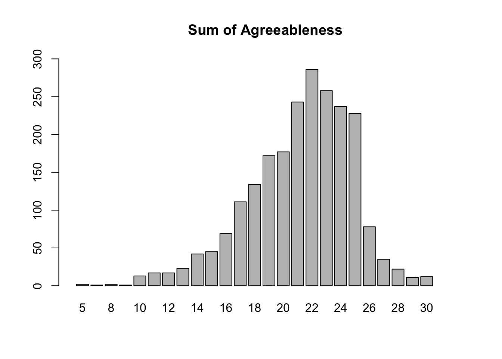
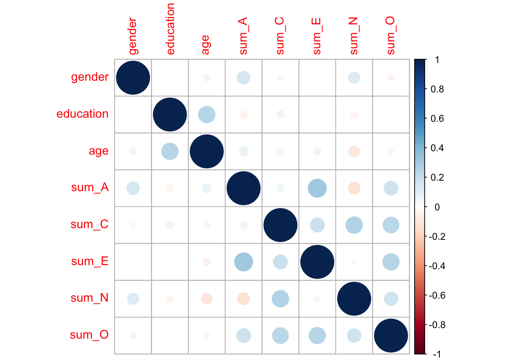
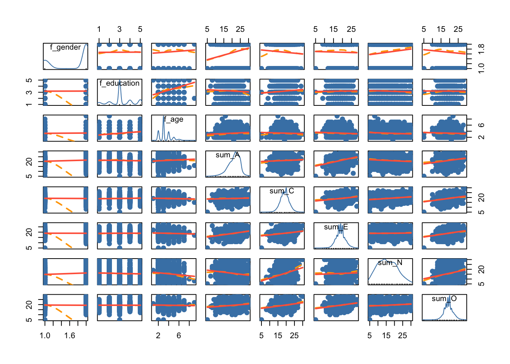

library(psychTools)
library(psych)
library(corrplot)corrplot 0.92 loadedbfiDF_2nd <- bfi
bfiDF_omit <- na.omit(bfiDF_2nd)library(psychTools)
library(psych)
library(corrplot)corrplot 0.92 loadedbfiDF_2nd <- bfi
bfiDF_omit <- na.omit(bfiDF_2nd)bfiDF_omit$f_gender <- factor(bfiDF_omit$gender, levels = c(1, 2), labels = c('Males', 'Females'))
bfiDF_omit$f_education <- factor(bfiDF_omit$education, levels = c(1, 2, 3, 4, 5),
labels = c('HS', 'finished HS',
'some college', 'college graduate',
'graduate degree'))
bfiDF_omit$f_age <- cut(bfiDF_omit$age, breaks = c(0,10,20,30,40,50,60,70,80,90),
labels = c('under 10', '10s', '20s','30s', '40s', '50s', '60s', '70s',
'80s'))# par(mfrow=c(4,4))
# 성별, 교육, 나이 그래프
barplot(table(bfiDF_omit$f_gender), main='gender')# 성별 응답자 중 여성이 많음
barplot(table(bfiDF_omit$f_education), main='education')
# 교육수준별 응답자 중 대재가 가장 많음
barplot(table(bfiDF_omit$age), main='age')# 연령별 응답자 중 20살이 가장 많음
# par(mfrow=c(1,1))bfiDF_omit$sum_A <- bfiDF_omit[,1]+bfiDF_omit[,2]+bfiDF_omit[,3]+bfiDF_omit[,4]+bfiDF_omit[,5]
bfiDF_omit$sum_C <- bfiDF_omit[,6]+bfiDF_omit[,7]+bfiDF_omit[,8]+bfiDF_omit[,9]+bfiDF_omit[,10]
bfiDF_omit$sum_E <- bfiDF_omit[,11]+bfiDF_omit[,12]+bfiDF_omit[,13]+bfiDF_omit[,14]+bfiDF_omit[,15]
bfiDF_omit$sum_N <- bfiDF_omit[,16]+bfiDF_omit[,17]+bfiDF_omit[,18]+bfiDF_omit[,19]+bfiDF_omit[,20]
bfiDF_omit$sum_O <- bfiDF_omit[,21]+bfiDF_omit[,22]+bfiDF_omit[,23]+bfiDF_omit[,24]+bfiDF_omit[,25]#?barplot()
barplot(table(bfiDF_omit$sum_A), xlim = c(0,32),
ylim = c(0,300), main='Sum of Agreeableness') #22
barplot(table(bfiDF_omit$sum_C), xlim = c(0,32),
ylim = c(0,320), main='Sum of Conscientiousness') #20barplot(table(bfiDF_omit$sum_E), xlim = c(0,32),
ylim = c(0,320), main='Sum of Extraversion') #19barplot(table(bfiDF_omit$sum_N), xlim = c(0,32),
ylim = c(0,120), main='Sum of Neuroticism') #14barplot(table(bfiDF_omit$sum_O), xlim = c(0,32),
ylim = c(0,420), main='Sum of Openness') #20table(bfiDF_omit$f_gender, bfiDF_omit$f_education)
HS finished HS some college college graduate graduate degree
Males 82 92 306 120 135
Females 116 158 772 226 229chisq.test(table(bfiDF_omit$f_gender, bfiDF_omit$f_education))
Pearson's Chi-squared test
data: table(bfiDF_omit$f_gender, bfiDF_omit$f_education)
X-squared = 21.573, df = 4, p-value = 0.0002437table(bfiDF_omit$f_gender, bfiDF_omit$f_age)
under 10 10s 20s 30s 40s 50s 60s 70s 80s
Males 1 161 334 139 60 32 7 1 0
Females 0 338 582 322 173 76 9 0 1chisq.test(table(bfiDF_omit$f_gender, bfiDF_omit$f_age))Warning in chisq.test(table(bfiDF_omit$f_gender, bfiDF_omit$f_age)): Chi-squared
approximation may be incorrect
Pearson's Chi-squared test
data: table(bfiDF_omit$f_gender, bfiDF_omit$f_age)
X-squared = 18.283, df = 8, p-value = 0.0192table(bfiDF_omit$f_education, bfiDF_omit$f_age)
under 10 10s 20s 30s 40s 50s 60s 70s 80s
HS 0 101 48 28 15 5 1 0 0
finished HS 0 54 97 46 34 15 3 0 1
some college 0 329 456 182 77 31 3 0 0
college graduate 0 10 169 86 56 24 1 0 0
graduate degree 1 5 146 119 51 33 8 1 0chisq.test(table(bfiDF_omit$f_education, bfiDF_omit$f_age))Warning in chisq.test(table(bfiDF_omit$f_education, bfiDF_omit$f_age)): Chi-
squared approximation may be incorrect
Pearson's Chi-squared test
data: table(bfiDF_omit$f_education, bfiDF_omit$f_age)
X-squared = 388.74, df = 32, p-value < 2.2e-16str(bfiDF_omit)'data.frame': 2236 obs. of 36 variables:
$ A1 : int 6 4 4 4 1 2 4 1 2 2 ...
$ A2 : int 6 3 4 5 5 6 5 6 4 5 ...
$ A3 : int 5 1 5 2 6 5 5 6 4 1 ...
$ A4 : int 6 5 6 2 5 6 6 1 4 3 ...
$ A5 : int 5 1 5 1 6 5 5 6 3 5 ...
$ C1 : int 6 3 4 5 4 3 5 5 6 5 ...
$ C2 : int 6 2 3 5 3 5 5 2 5 4 ...
$ C3 : int 6 4 5 5 2 6 4 5 6 5 ...
$ C4 : int 1 2 3 2 4 3 1 1 1 2 ...
$ C5 : int 3 4 2 2 5 6 1 1 1 5 ...
$ E1 : int 2 3 1 3 2 2 3 1 2 1 ...
$ E2 : int 1 6 3 4 1 2 2 1 4 2 ...
$ E3 : int 6 4 2 3 2 4 5 6 4 6 ...
$ E4 : int 5 2 5 6 5 6 5 6 2 5 ...
$ E5 : int 6 1 4 5 2 6 6 6 6 4 ...
$ N1 : int 3 6 3 2 2 4 2 2 3 1 ...
$ N2 : int 5 3 3 4 2 4 3 3 3 4 ...
$ N3 : int 2 2 4 2 2 4 3 1 5 2 ...
$ N4 : int 2 6 2 2 2 6 1 2 3 2 ...
$ N5 : int 3 4 3 3 2 6 1 1 2 5 ...
$ O1 : int 4 3 5 5 6 6 6 6 5 2 ...
$ O2 : int 3 2 3 2 1 1 2 4 2 4 ...
$ O3 : int 5 4 5 5 5 5 5 5 6 5 ...
$ O4 : int 6 5 6 5 5 6 6 5 6 4 ...
$ O5 : int 1 3 3 5 2 1 2 3 1 1 ...
$ gender : int 2 1 1 1 1 2 1 2 2 2 ...
$ education : int 3 2 1 1 5 2 1 3 5 3 ...
$ age : int 21 19 21 17 68 27 18 20 51 33 ...
$ f_gender : Factor w/ 2 levels "Males","Females": 2 1 1 1 1 2 1 2 2 2 ...
$ f_education: Factor w/ 5 levels "HS","finished HS",..: 3 2 1 1 5 2 1 3 5 3 ...
$ f_age : Factor w/ 9 levels "under 10","10s",..: 3 2 3 2 7 3 2 2 6 4 ...
$ sum_A : int 28 14 24 14 23 24 25 20 17 16 ...
$ sum_C : int 22 15 17 19 18 23 16 14 19 21 ...
$ sum_E : int 20 16 15 21 12 20 21 20 18 18 ...
$ sum_N : int 15 21 15 13 10 24 10 9 16 14 ...
$ sum_O : int 19 17 22 22 19 19 21 23 20 16 ...
- attr(*, "na.action")= 'omit' Named int [1:564] 1 2 3 4 5 7 9 10 12 13 ...
..- attr(*, "names")= chr [1:564] "61617" "61618" "61620" "61621" ...corr.test(bfiDF_omit[,c(27,32:36)])Call:corr.test(x = bfiDF_omit[, c(27, 32:36)])
Correlation matrix
education sum_A sum_C sum_E sum_N sum_O
education 1.00 -0.05 0.06 0.01 -0.04 0.00
sum_A -0.05 1.00 0.05 0.30 -0.13 0.18
sum_C 0.06 0.05 1.00 0.18 0.25 0.23
sum_E 0.01 0.30 0.18 1.00 0.03 0.25
sum_N -0.04 -0.13 0.25 0.03 1.00 0.17
sum_O 0.00 0.18 0.23 0.25 0.17 1.00
Sample Size
[1] 2236
Probability values (Entries above the diagonal are adjusted for multiple tests.)
education sum_A sum_C sum_E sum_N sum_O
education 0.00 0.13 0.04 1.00 0.21 1
sum_A 0.03 0.00 0.07 0.00 0.00 0
sum_C 0.01 0.01 0.00 0.00 0.00 0
sum_E 0.63 0.00 0.00 0.00 0.43 0
sum_N 0.05 0.00 0.00 0.14 0.00 0
sum_O 0.85 0.00 0.00 0.00 0.00 0
To see confidence intervals of the correlations, print with the short=FALSE option# p-value=>education-sum_A 0.03,
# # A우호성
# education-sum_C => 0.01
# # C성실성
# corrplot(bfiDF_omit[c(,27,31:35)])
corData <- bfiDF_omit[,c(27,32:36)]
corMatrix <- cor(corData)
corMatrix education sum_A sum_C sum_E sum_N sum_O
education 1.00000000 -0.04712627 0.05776667 0.01014624 -0.04081495 -0.00394203
sum_A -0.04712627 1.00000000 0.05346300 0.30039252 -0.12711922 0.17705902
sum_C 0.05776667 0.05346300 1.00000000 0.18170833 0.25206114 0.23152325
sum_E 0.01014624 0.30039252 0.18170833 1.00000000 0.03085249 0.24605280
sum_N -0.04081495 -0.12711922 0.25206114 0.03085249 1.00000000 0.16735843
sum_O -0.00394203 0.17705902 0.23152325 0.24605280 0.16735843 1.00000000corrplot(corMatrix)
library(car)Loading required package: carData
Attaching package: 'car'The following object is masked from 'package:psych':
logitform_multi_age_A <- sum_A~age+I(age^2)
lm(form_multi_age_A, data=bfiDF_omit)
Call:
lm(formula = form_multi_age_A, data = bfiDF_omit)
Coefficients:
(Intercept) age I(age^2)
18.427003 0.153791 -0.001831 model_multi_age_A <- lm(form_multi_age_A, data=bfiDF_omit)
plot(sum_A~age, data=bfiDF_omit, pch=19,
col='steelblue')
library(dplyr)
Attaching package: 'dplyr'The following object is masked from 'package:car':
recodeThe following objects are masked from 'package:stats':
filter, lagThe following objects are masked from 'package:base':
intersect, setdiff, setequal, unionwith(bfiDF_omit,
lines(arrange(data.frame(age, fitted(model_multi_age_A)), age),
lty=1, lwd=3, col='tomato'))summary(model_multi_age_A)
Call:
lm(formula = form_multi_age_A, data = bfiDF_omit)
Residuals:
Min 1Q Median 3Q Max
-15.9959 -2.2589 0.4088 2.4885 9.3978
Coefficients:
Estimate Std. Error t value Pr(>|t|)
(Intercept) 18.427003 0.636746 28.939 < 2e-16 ***
age 0.153791 0.038933 3.950 8.05e-05 ***
I(age^2) -0.001831 0.000542 -3.377 0.000745 ***
---
Signif. codes: 0 '***' 0.001 '**' 0.01 '*' 0.05 '.' 0.1 ' ' 1
Residual standard error: 3.62 on 2233 degrees of freedom
Multiple R-squared: 0.01024, Adjusted R-squared: 0.009358
F-statistic: 11.56 on 2 and 2233 DF, p-value: 1.016e-05anova(model_multi_age_A)Analysis of Variance Table
Response: sum_A
Df Sum Sq Mean Sq F value Pr(>F)
age 1 153.4 153.424 11.708 0.0006336 ***
I(age^2) 1 149.4 149.450 11.404 0.0007453 ***
Residuals 2233 29262.5 13.105
---
Signif. codes: 0 '***' 0.001 '**' 0.01 '*' 0.05 '.' 0.1 ' ' 1# form_age_sA <- age~sum_A
# model_age_sA <- lm(formula=form_age_sA, data=bfiDF_omit)
# abline(model_age_sA, lwd=2, col='tomato')
# summary(model_age_sA)
# anova(model_age_sA)summary(aov(sum_A~f_age, data=bfiDF_omit)) Df Sum Sq Mean Sq F value Pr(>F)
f_age 8 341 42.59 3.245 0.00112 **
Residuals 2227 29225 13.12
---
Signif. codes: 0 '***' 0.001 '**' 0.01 '*' 0.05 '.' 0.1 ' ' 1str(bfiDF_omit$f_age) Factor w/ 9 levels "under 10","10s",..: 3 2 3 2 7 3 2 2 6 4 ...form_multi_age_C <- sum_C~age+I(age^2)
lm(form_multi_age_C, data=bfiDF_omit)
Call:
lm(formula = form_multi_age_C, data = bfiDF_omit)
Coefficients:
(Intercept) age I(age^2)
19.1231849 0.0050200 -0.0002247 model_multi_age_C <- lm(form_multi_age_C, data=bfiDF_omit)
plot(sum_C~age, data=bfiDF_omit, pch=19,
col='steelblue')
library(dplyr)
with(bfiDF_omit,
lines(arrange(data.frame(age, fitted(model_multi_age_C)), age),
lty=1, lwd=3, col='tomato'))summary(model_multi_age_C)
Call:
lm(formula = form_multi_age_C, data = bfiDF_omit)
Residuals:
Min 1Q Median 3Q Max
-14.1374 -2.0236 -0.0715 1.8751 10.8751
Coefficients:
Estimate Std. Error t value Pr(>|t|)
(Intercept) 19.1231849 0.4832995 39.568 <2e-16 ***
age 0.0050200 0.0295507 0.170 0.865
I(age^2) -0.0002247 0.0004114 -0.546 0.585
---
Signif. codes: 0 '***' 0.001 '**' 0.01 '*' 0.05 '.' 0.1 ' ' 1
Residual standard error: 2.748 on 2233 degrees of freedom
Multiple R-squared: 0.001903, Adjusted R-squared: 0.001009
F-statistic: 2.128 on 2 and 2233 DF, p-value: 0.1193anova(model_multi_age_C)Analysis of Variance Table
Response: sum_C
Df Sum Sq Mean Sq F value Pr(>F)
age 1 29.9 29.8862 3.9586 0.04675 *
I(age^2) 1 2.3 2.2522 0.2983 0.58499
Residuals 2233 16858.3 7.5496
---
Signif. codes: 0 '***' 0.001 '**' 0.01 '*' 0.05 '.' 0.1 ' ' 1form_multi_age_E <- sum_E~age+I(age^2)
lm(form_multi_age_E, data=bfiDF_omit)
Call:
lm(formula = form_multi_age_E, data = bfiDF_omit)
Coefficients:
(Intercept) age I(age^2)
19.0239102 0.0074921 -0.0002997 model_multi_age_E <- lm(form_multi_age_E, data=bfiDF_omit)
plot(sum_E~age, data=bfiDF_omit, pch=19,
col='steelblue')
library(dplyr)
with(bfiDF_omit,
lines(arrange(data.frame(age, fitted(model_multi_age_E)), age),
lty=1, lwd=3, col='tomato'))summary(model_multi_age_E)
Call:
lm(formula = form_multi_age_E, data = bfiDF_omit)
Residuals:
Min 1Q Median 3Q Max
-14.0581 -1.8481 -0.0239 1.4772 9.0013
Coefficients:
Estimate Std. Error t value Pr(>|t|)
(Intercept) 19.0239102 0.4699957 40.477 <2e-16 ***
age 0.0074921 0.0287373 0.261 0.794
I(age^2) -0.0002997 0.0004001 -0.749 0.454
---
Signif. codes: 0 '***' 0.001 '**' 0.01 '*' 0.05 '.' 0.1 ' ' 1
Residual standard error: 2.672 on 2233 degrees of freedom
Multiple R-squared: 0.003219, Adjusted R-squared: 0.002326
F-statistic: 3.605 on 2 and 2233 DF, p-value: 0.02733anova(model_multi_age_E)Analysis of Variance Table
Response: sum_E
Df Sum Sq Mean Sq F value Pr(>F)
age 1 47.5 47.477 6.6498 0.00998 **
I(age^2) 1 4.0 4.007 0.5612 0.45385
Residuals 2233 15942.9 7.140
---
Signif. codes: 0 '***' 0.001 '**' 0.01 '*' 0.05 '.' 0.1 ' ' 1form_multi_age_N <- sum_N~age+I(age^2)
lm(form_multi_age_N, data=bfiDF_omit)
Call:
lm(formula = form_multi_age_N, data = bfiDF_omit)
Coefficients:
(Intercept) age I(age^2)
15.635262 0.058502 -0.001667 model_multi_age_N <- lm(form_multi_age_N, data=bfiDF_omit)
plot(sum_N~age, data=bfiDF_omit, pch=19,
col='steelblue')
library(dplyr)
with(bfiDF_omit,
lines(arrange(data.frame(age, fitted(model_multi_age_N)), age),
lty=1, lwd=3, col='tomato'))summary(model_multi_age_N)
Call:
lm(formula = form_multi_age_N, data = bfiDF_omit)
Residuals:
Min 1Q Median 3Q Max
-11.1481 -4.7620 -0.1449 4.1536 15.7181
Coefficients:
Estimate Std. Error t value Pr(>|t|)
(Intercept) 15.6352620 1.0451858 14.959 <2e-16 ***
age 0.0585024 0.0639065 0.915 0.3601
I(age^2) -0.0016674 0.0008897 -1.874 0.0611 .
---
Signif. codes: 0 '***' 0.001 '**' 0.01 '*' 0.05 '.' 0.1 ' ' 1
Residual standard error: 5.942 on 2233 degrees of freedom
Multiple R-squared: 0.01271, Adjusted R-squared: 0.01183
F-statistic: 14.37 on 2 and 2233 DF, p-value: 6.267e-07anova(model_multi_age_N)Analysis of Variance Table
Response: sum_N
Df Sum Sq Mean Sq F value Pr(>F)
age 1 891 891.07 25.2368 5.473e-07 ***
I(age^2) 1 124 124.01 3.5122 0.06105 .
Residuals 2233 78844 35.31
---
Signif. codes: 0 '***' 0.001 '**' 0.01 '*' 0.05 '.' 0.1 ' ' 1form_multi_age_O <- sum_O~age+I(age^2)
lm(form_multi_age_O, data=bfiDF_omit)
Call:
lm(formula = form_multi_age_O, data = bfiDF_omit)
Coefficients:
(Intercept) age I(age^2)
20.2255138 -0.0452281 0.0005143 model_multi_age_O <- lm(form_multi_age_O, data=bfiDF_omit)
plot(sum_O~age, data=bfiDF_omit, pch=19,
col='steelblue')
library(dplyr)
with(bfiDF_omit,
lines(arrange(data.frame(age, fitted(model_multi_age_N)), age),
lty=1, lwd=3, col='tomato'))summary(model_multi_age_O)
Call:
lm(formula = form_multi_age_O, data = bfiDF_omit)
Residuals:
Min 1Q Median 3Q Max
-14.552 -1.527 -0.244 1.543 9.584
Coefficients:
Estimate Std. Error t value Pr(>|t|)
(Intercept) 20.2255138 0.4662129 43.383 <2e-16 ***
age -0.0452281 0.0285060 -1.587 0.113
I(age^2) 0.0005143 0.0003969 1.296 0.195
---
Signif. codes: 0 '***' 0.001 '**' 0.01 '*' 0.05 '.' 0.1 ' ' 1
Residual standard error: 2.651 on 2233 degrees of freedom
Multiple R-squared: 0.002038, Adjusted R-squared: 0.001144
F-statistic: 2.28 on 2 and 2233 DF, p-value: 0.1025anova(model_multi_age_O)Analysis of Variance Table
Response: sum_O
Df Sum Sq Mean Sq F value Pr(>F)
age 1 20.2 20.2396 2.8810 0.08977 .
I(age^2) 1 11.8 11.7962 1.6791 0.19518
Residuals 2233 15687.3 7.0252
---
Signif. codes: 0 '***' 0.001 '**' 0.01 '*' 0.05 '.' 0.1 ' ' 1# education~sum_A+sum_C+sum_E+sum_N+sum_O
bfiDF_e_sum <- subset(bfiDF_omit,
select=c(27, 32:36))
cor(bfiDF_e_sum) education sum_A sum_C sum_E sum_N sum_O
education 1.00000000 -0.04712627 0.05776667 0.01014624 -0.04081495 -0.00394203
sum_A -0.04712627 1.00000000 0.05346300 0.30039252 -0.12711922 0.17705902
sum_C 0.05776667 0.05346300 1.00000000 0.18170833 0.25206114 0.23152325
sum_E 0.01014624 0.30039252 0.18170833 1.00000000 0.03085249 0.24605280
sum_N -0.04081495 -0.12711922 0.25206114 0.03085249 1.00000000 0.16735843
sum_O -0.00394203 0.17705902 0.23152325 0.24605280 0.16735843 1.00000000plot(bfiDF_e_sum, pch=19, col='steelblue')form_2 = education ~ sum_A+sum_C+sum_E+sum_N+sum_O
lm(form_2, data = bfiDF_e_sum)
Call:
lm(formula = form_2, data = bfiDF_e_sum)
Coefficients:
(Intercept) sum_A sum_C sum_E sum_N sum_O
3.105277 -0.019843 0.030636 0.007801 -0.012685 -0.001337 summary(lm(form_2, data = bfiDF_e_sum))
Call:
lm(formula = form_2, data = bfiDF_e_sum)
Residuals:
Min 1Q Median 3Q Max
-2.5765 -0.3193 -0.1414 0.7729 2.0912
Coefficients:
Estimate Std. Error t value Pr(>|t|)
(Intercept) 3.105277 0.255055 12.175 < 2e-16 ***
sum_A -0.019843 0.006888 -2.881 0.004002 **
sum_C 0.030636 0.009069 3.378 0.000743 ***
sum_E 0.007801 0.009463 0.824 0.409835
sum_N -0.012685 0.004135 -3.068 0.002183 **
sum_O -0.001337 0.009446 -0.142 0.887427
---
Signif. codes: 0 '***' 0.001 '**' 0.01 '*' 0.05 '.' 0.1 ' ' 1
Residual standard error: 1.107 on 2230 degrees of freedom
Multiple R-squared: 0.01042, Adjusted R-squared: 0.008204
F-statistic: 4.698 on 5 and 2230 DF, p-value: 0.0002855library(stargazer)
Please cite as: Hlavac, Marek (2022). stargazer: Well-Formatted Regression and Summary Statistics Tables. R package version 5.2.3. https://CRAN.R-project.org/package=stargazer stargazer(lm(form_2, data = bfiDF_e_sum), type='text')
===============================================
Dependent variable:
---------------------------
education
-----------------------------------------------
sum_A -0.020***
(0.007)
sum_C 0.031***
(0.009)
sum_E 0.008
(0.009)
sum_N -0.013***
(0.004)
sum_O -0.001
(0.009)
Constant 3.105***
(0.255)
-----------------------------------------------
Observations 2,236
R2 0.010
Adjusted R2 0.008
Residual Std. Error 1.107 (df = 2230)
F Statistic 4.698*** (df = 5; 2230)
===============================================
Note: *p<0.1; **p<0.05; ***p<0.01library(car)
scatterplotMatrix(bfiDF_omit[29:35], pch = 19, col = "steelblue", cex = 1.2,
regLine = list(method = lm, lwd = 2, col = "tomato"), smooth = list(smoother = loessLine, spread = FALSE,
lwd.smooth = 2, col.smooth = "orange"))
str(bfiDF_omit)'data.frame': 2236 obs. of 36 variables:
$ A1 : int 6 4 4 4 1 2 4 1 2 2 ...
$ A2 : int 6 3 4 5 5 6 5 6 4 5 ...
$ A3 : int 5 1 5 2 6 5 5 6 4 1 ...
$ A4 : int 6 5 6 2 5 6 6 1 4 3 ...
$ A5 : int 5 1 5 1 6 5 5 6 3 5 ...
$ C1 : int 6 3 4 5 4 3 5 5 6 5 ...
$ C2 : int 6 2 3 5 3 5 5 2 5 4 ...
$ C3 : int 6 4 5 5 2 6 4 5 6 5 ...
$ C4 : int 1 2 3 2 4 3 1 1 1 2 ...
$ C5 : int 3 4 2 2 5 6 1 1 1 5 ...
$ E1 : int 2 3 1 3 2 2 3 1 2 1 ...
$ E2 : int 1 6 3 4 1 2 2 1 4 2 ...
$ E3 : int 6 4 2 3 2 4 5 6 4 6 ...
$ E4 : int 5 2 5 6 5 6 5 6 2 5 ...
$ E5 : int 6 1 4 5 2 6 6 6 6 4 ...
$ N1 : int 3 6 3 2 2 4 2 2 3 1 ...
$ N2 : int 5 3 3 4 2 4 3 3 3 4 ...
$ N3 : int 2 2 4 2 2 4 3 1 5 2 ...
$ N4 : int 2 6 2 2 2 6 1 2 3 2 ...
$ N5 : int 3 4 3 3 2 6 1 1 2 5 ...
$ O1 : int 4 3 5 5 6 6 6 6 5 2 ...
$ O2 : int 3 2 3 2 1 1 2 4 2 4 ...
$ O3 : int 5 4 5 5 5 5 5 5 6 5 ...
$ O4 : int 6 5 6 5 5 6 6 5 6 4 ...
$ O5 : int 1 3 3 5 2 1 2 3 1 1 ...
$ gender : int 2 1 1 1 1 2 1 2 2 2 ...
$ education : int 3 2 1 1 5 2 1 3 5 3 ...
$ age : int 21 19 21 17 68 27 18 20 51 33 ...
$ f_gender : Factor w/ 2 levels "Males","Females": 2 1 1 1 1 2 1 2 2 2 ...
$ f_education: Factor w/ 5 levels "HS","finished HS",..: 3 2 1 1 5 2 1 3 5 3 ...
$ f_age : Factor w/ 9 levels "under 10","10s",..: 3 2 3 2 7 3 2 2 6 4 ...
$ sum_A : int 28 14 24 14 23 24 25 20 17 16 ...
$ sum_C : int 22 15 17 19 18 23 16 14 19 21 ...
$ sum_E : int 20 16 15 21 12 20 21 20 18 18 ...
$ sum_N : int 15 21 15 13 10 24 10 9 16 14 ...
$ sum_O : int 19 17 22 22 19 19 21 23 20 16 ...
- attr(*, "na.action")= 'omit' Named int [1:564] 1 2 3 4 5 7 9 10 12 13 ...
..- attr(*, "names")= chr [1:564] "61617" "61618" "61620" "61621" ...# A----
bfiDF_omit$sum_A_3 <- cut(bfiDF_omit$sum_A, breaks = c(0,10,20,30),
labels = c(10, 20, 30))
table(bfiDF_omit$sum_A_3)
10 20 30
19 807 1410 # 0~10 10~20 20~30
# 19 807 1410
# C----
bfiDF_omit$sum_C_3 <- cut(bfiDF_omit$sum_C, breaks = c(0,10,20,30),
labels = c(10, 20, 30))
table(bfiDF_omit$sum_C_3)
10 20 30
8 1600 628 # 0~10 10~20 20~30
# 8 1600 628
# E----
bfiDF_omit$sum_E_3 <- cut(bfiDF_omit$sum_E, breaks = c(0,10,20,30),
labels = c(10, 20, 30))
table(bfiDF_omit$sum_E_3)
10 20 30
4 1681 551 # 0~10 10~20 20~30
# 4 1681 551
# N----
bfiDF_omit$sum_N_3 <- cut(bfiDF_omit$sum_N, breaks = c(0,10,20,30),
labels = c(10, 20, 30))
table(bfiDF_omit$sum_N_3)
10 20 30
491 1235 510 # 0~10 10~20 20~30
# 491 1235 510
# O----
bfiDF_omit$sum_O_3 <- cut(bfiDF_omit$sum_O, breaks = c(0,10,20,30),
labels = c(10, 20, 30))
table(bfiDF_omit$sum_O_3)
10 20 30
5 1573 658 # 0~10 10~20 20~30
# 5 1573 658 par(mfrow=c(3,2))
barplot(table(bfiDF_omit$sum_A_3), main='Agreeableness_3') # 20~30점 이 가장 많음
barplot(table(bfiDF_omit$sum_C_3), main='Conscientiousness_3') # 10~20점 이 가장 많음
barplot(table(bfiDF_omit$sum_E_3), main='Exraversion_3') # 10~20점 이 가장 많음
barplot(table(bfiDF_omit$sum_N_3), main='Neuroticism_3') # 10~20점 이 가장 많음
barplot(table(bfiDF_omit$sum_O_3), main='Openness_3') # 10~20점 이 가장 많음table(bfiDF_omit$sum_A_3)
10 20 30
19 807 1410 table(bfiDF_omit$sum_C_3)
10 20 30
8 1600 628 table(bfiDF_omit$sum_E_3)
10 20 30
4 1681 551 table(bfiDF_omit$sum_N_3)
10 20 30
491 1235 510 table(bfiDF_omit$sum_O_3)
10 20 30
5 1573 658 {r} # # 종속변수 : age # # 독립변수 : 항목? # form_age_sA3 <- age~sum_A_3 # model_age_sA3 <- lm(formula=form_age_sA3, data=bfiDF_omit) # abline(model_age_sA3, lwd=2, col='tomato') # summary(model_age_sA3) # anova(model_age_sA3) # 0.007314 ** #::: {.cell}
plot(age~sum_A_3, data=bfiDF_omit, pch=19,
col='steelblue')::: {.cell-output-display}  :::
:::
plot(age~sum_C_3, data=bfiDF_omit, pch=19,
col='steelblue')::: {.cell-output-display} :::
plot(age~sum_E_3, data=bfiDF_omit, pch=19,
col='steelblue')::: {.cell-output-display} :::
plot(age~sum_N_3, data=bfiDF_omit, pch=19,
col='steelblue')::: {.cell-output-display} :::
plot(age~sum_O_3, data=bfiDF_omit, pch=19,
col='steelblue')::: {.cell-output-display} ::: :::
form_A_3 <- age~sum_A_3
form_C_3 <- age~sum_C_3
form_E_3 <- age~sum_E_3
form_N_3 <- age~sum_N_3
form_O_3 <- age~sum_O_3
model_A_3 <- lm(formula=form_A_3, data=bfiDF_omit)
model_C_3 <- lm(formula=form_C_3, data=bfiDF_omit)
model_E_3 <- lm(formula=form_E_3, data=bfiDF_omit)
model_N_3 <- lm(formula=form_N_3, data=bfiDF_omit)
model_O_3 <- lm(formula=form_O_3, data=bfiDF_omit)
# abline(model_A_3, lwd=2, col='tomato')
summary(model_A_3)
Call:
lm(formula = form_A_3, data = bfiDF_omit)
Residuals:
Min 1Q Median 3Q Max
-26.933 -8.901 -2.933 6.099 57.099
Coefficients:
Estimate Std. Error t value Pr(>|t|)
(Intercept) 24.053 2.442 9.849 <2e-16 ***
sum_A_320 4.848 2.471 1.962 0.0499 *
sum_A_330 5.880 2.459 2.392 0.0169 *
---
Signif. codes: 0 '***' 0.001 '**' 0.01 '*' 0.05 '.' 0.1 ' ' 1
Residual standard error: 10.65 on 2233 degrees of freedom
Multiple R-squared: 0.004395, Adjusted R-squared: 0.003503
F-statistic: 4.929 on 2 and 2233 DF, p-value: 0.007314summary(model_C_3)
Call:
lm(formula = form_C_3, data = bfiDF_omit)
Residuals:
Min 1Q Median 3Q Max
-26.918 -8.583 -2.918 6.082 56.082
Coefficients:
Estimate Std. Error t value Pr(>|t|)
(Intercept) 20.750 3.762 5.516 3.86e-08 ***
sum_C_320 9.168 3.771 2.431 0.0151 *
sum_C_330 7.833 3.785 2.069 0.0386 *
---
Signif. codes: 0 '***' 0.001 '**' 0.01 '*' 0.05 '.' 0.1 ' ' 1
Residual standard error: 10.64 on 2233 degrees of freedom
Multiple R-squared: 0.005588, Adjusted R-squared: 0.004697
F-statistic: 6.274 on 2 and 2233 DF, p-value: 0.001918summary(model_E_3)
Call:
lm(formula = form_E_3, data = bfiDF_omit)
Residuals:
Min 1Q Median 3Q Max
-25.673 -8.673 -2.779 6.221 56.221
Coefficients:
Estimate Std. Error t value Pr(>|t|)
(Intercept) 32.000 5.329 6.005 2.23e-09 ***
sum_E_320 -2.221 5.335 -0.416 0.677
sum_E_330 -3.327 5.348 -0.622 0.534
---
Signif. codes: 0 '***' 0.001 '**' 0.01 '*' 0.05 '.' 0.1 ' ' 1
Residual standard error: 10.66 on 2233 degrees of freedom
Multiple R-squared: 0.002093, Adjusted R-squared: 0.001199
F-statistic: 2.341 on 2 and 2233 DF, p-value: 0.09644summary(model_N_3)
Call:
lm(formula = form_N_3, data = bfiDF_omit)
Residuals:
Min 1Q Median 3Q Max
-25.815 -8.055 -2.815 6.185 53.945
Coefficients:
Estimate Std. Error t value Pr(>|t|)
(Intercept) 32.0550 0.4776 67.116 < 2e-16 ***
sum_N_320 -3.2404 0.5646 -5.739 1.08e-08 ***
sum_N_330 -3.3099 0.6691 -4.947 8.11e-07 ***
---
Signif. codes: 0 '***' 0.001 '**' 0.01 '*' 0.05 '.' 0.1 ' ' 1
Residual standard error: 10.58 on 2233 degrees of freedom
Multiple R-squared: 0.01604, Adjusted R-squared: 0.01515
F-statistic: 18.2 on 2 and 2233 DF, p-value: 1.451e-08summary(model_O_3)
Call:
lm(formula = form_O_3, data = bfiDF_omit)
Residuals:
Min 1Q Median 3Q Max
-25.666 -8.666 -2.855 6.145 57.334
Coefficients:
Estimate Std. Error t value Pr(>|t|)
(Intercept) 32.200 4.765 6.758 1.78e-11 ***
sum_O_320 -2.345 4.772 -0.491 0.623
sum_O_330 -3.534 4.783 -0.739 0.460
---
Signif. codes: 0 '***' 0.001 '**' 0.01 '*' 0.05 '.' 0.1 ' ' 1
Residual standard error: 10.65 on 2233 degrees of freedom
Multiple R-squared: 0.002725, Adjusted R-squared: 0.001832
F-statistic: 3.05 on 2 and 2233 DF, p-value: 0.04753anova(model_A_3) # 0.007314 **Analysis of Variance Table
Response: age
Df Sum Sq Mean Sq F value Pr(>F)
sum_A_3 2 1117 558.57 4.9289 0.007314 **
Residuals 2233 253060 113.33
---
Signif. codes: 0 '***' 0.001 '**' 0.01 '*' 0.05 '.' 0.1 ' ' 1anova(model_C_3) # 0.001918 **Analysis of Variance Table
Response: age
Df Sum Sq Mean Sq F value Pr(>F)
sum_C_3 2 1420 710.15 6.2739 0.001918 **
Residuals 2233 252756 113.19
---
Signif. codes: 0 '***' 0.001 '**' 0.01 '*' 0.05 '.' 0.1 ' ' 1anova(model_E_3) # 0.09644Analysis of Variance Table
Response: age
Df Sum Sq Mean Sq F value Pr(>F)
sum_E_3 2 532 265.94 2.3413 0.09644 .
Residuals 2233 253645 113.59
---
Signif. codes: 0 '***' 0.001 '**' 0.01 '*' 0.05 '.' 0.1 ' ' 1anova(model_N_3) # 1.451e-08 ***Analysis of Variance Table
Response: age
Df Sum Sq Mean Sq F value Pr(>F)
sum_N_3 2 4076 2037.9 18.195 1.451e-08 ***
Residuals 2233 250101 112.0
---
Signif. codes: 0 '***' 0.001 '**' 0.01 '*' 0.05 '.' 0.1 ' ' 1anova(model_O_3) # 0.04753 *Analysis of Variance Table
Response: age
Df Sum Sq Mean Sq F value Pr(>F)
sum_O_3 2 693 346.28 3.0505 0.04753 *
Residuals 2233 253484 113.52
---
Signif. codes: 0 '***' 0.001 '**' 0.01 '*' 0.05 '.' 0.1 ' ' 1